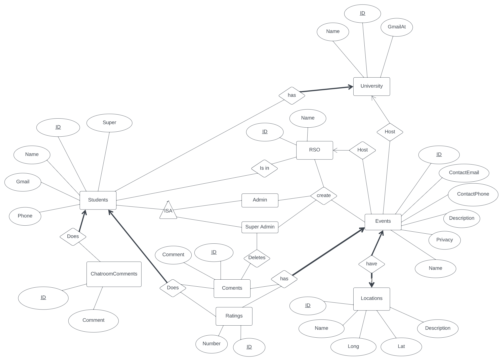
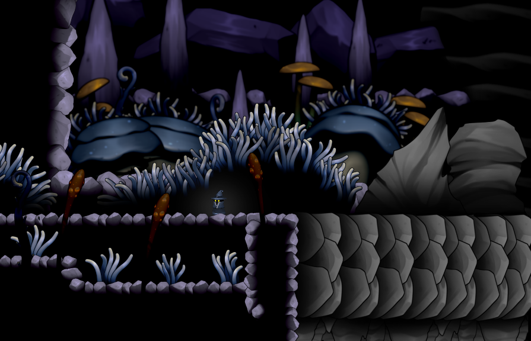

Projects
Before reading further, I have removed a lot of the smaller projects from this section that I feel are too simple when compared to the more complex applications I have worked on since I first made this website. This is because when I work on a project for months at a time with multiple team members that project will look far better than any small individual project I produce. As a result there is far less projects in this list but the ones that are have taken at least a few months to a year of time and effort. As I continue my career I hope to add a great many projects which I am proud of. Many projects small and large and can be seen in the games section of this website here. Which I plan to add to with each new game I create.
Club Event Organizer Website Application | WAMP Stack
Description:
This application was made as a final project for my Database Systems
Class to show our knowledge of using MySQL which we gained
throughout the course. This is the largest and most complex website
application I have made to this date and uses Windows, Apache,
MySQL, and PHP. We use functional PHP, prepared statements and
encrypts and decrypts information when necessary when interacting
with the database.
In the application image below we can see the
Entity-Relationship Diagram (ERD) which demonstrates the complexity
of the database and how all the entities are related. A full 25 page
description of the project report can be found
here. But in short, we created an application to model students being
able to sign up for universities, join and create Registered Student
Organizations (RSOs), as well as create and join events which could
be public, private (meaning only students at the university could
join), or RSO (meaning only students in the RSO could join). On top
of these requirements we also created a live chatroom to talk to
other users on the website and a profile section to update the users
profile to change their associated information and preferences on
the website including their name, password, and even light and dark
mode (which we simply swapped out the CSS files based on their
preferences).
Created April 2022.
The application is currently 3700+ lines of code.
This application was a way for me to learn more about PHP and MySQL and I thoroughly enjoyed the process. I plan to use PHP and MySQL much more in the future and I want to use what I learned here to create more complex and useful applications when I need them in the future. I do not, however, need a complex website with a database for anything at this time so I am spending more time focusing on learning more about game engines to focus on what I am passionate about.
Application: Dimension Game/Game Engine/Level Editor | JavaScript
Description:
Dimension is a game that was made for senior design by my
team members and I that took over a year to develop. My other team
members on the project were Kenaniah Subrahmanyam, Isaac
Subrahmanyam, Jason Dookhoo, and Jenan Abas. We decided to develop
the game in JavaScript to increase the complexity of the project and
create everything from scratch only using the p5.js library to
preload images for the game. This lead us to create a complete game
engine and a level editor which we discuss in detail
here
if you would like to read more and there is a demo video you can
watch
here. The
game engine and level editor are reusable for the creation of future
projects if we choose to do so but I am focusing more on using more
powerful engines such as Unity and Unreal.
Created From January 2022 to December 2022.
The application is currently 10,000+ lines of code.
In the future I want to expand this game, but it is not possible using the same tools we used due to the loading issues we had with the game. In the future I would like to reuse assets we purchased and create a new game with a similar feel and direction using Unity and make a fun and entertaining game.
Application: Future Project Plans
- Application which can determine how hard a song is to play based off it's music sheet.
- Application that creates code from a blueprint similar to UE4 but for languages like C and Java.
- General fitness application that helps the user get or stay fit by counting calories and or helping with a workout plan.
- Application to help users learn to spell in any language.